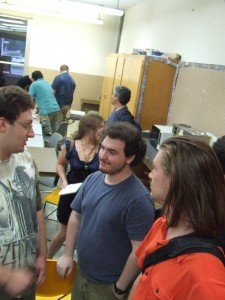

ORGASMS. A trip into a dysthymic dystopia where the Chip prevents incipient TERRORISM. And unaouthorized ORGASMS. Dreamed up by Pilliard Dickle. Realized with the most passionate intimacy by the Erisian Elestria Herself.
“We’ve found the silver bullet that could make things like electronic clothing and inexpensive games a reality today. This breakthrough means the industry now has the capability to print electronics on a wider range of materials and at a lower cost,”
J.C. “Clint” Sprott is a giant in the field of chaos theory, and I was privileged to work on a project with him. I found this link on an archive.org version of my own website from 2007. Not sure what’s still there but it’s of interest, so here it is. Next I’m going to try to figure out how to post the rest of this piece on strange attractors. I’m still just a Tumblr fumblr from the wayback machine.
There’s a famous experiment where they keep a bunch of monkeys in a room for an indefinite amount of time. There’s a big white staircase leading up out of the room. Every time a monkey climbs to the top of the staircase, he gets blasted back down the stairs with a hose. When this happens, every monkey in the room also gets blasted with water. This makes them very angry.
Soon, the monkeys have figured it out: beat the shit out of any monkey that starts to climb the stairs. That’s the new rule.
At some point, they remove a monkey and send in a new one. He learns the rule quickly: don’t climb the stairs. And if we’re beating somebody up, join in. One by one, they replace each monkey with a new one who has to learn the rule.
At some point they can turn off the hose. The monkeys will reliably prevent escape. Policing the stairs has become a cultural norm. Eventually, they have this population of monkeys who are trained to beat up any monkey that tries to escape, but don’t even understand why.
The experiment is run by interns who are paid in course credit. Occasionally, an intern finishes the semester and leaves. New interns join the team and everybody explains how to feed the monkeys and how to record the data. But at this point, none of the interns are from the original group, none of them have met the scientists leading this project. Most of the interns don’t fully understand the point of the experiment.
The scientist who began the experiment left long ago. Other researchers were assigned to the project by an administrator in order to keep this valuable experiment running. None of the remaining scientists are actually authors of the paper, or even understand what it’s about.
The administrator supervising the project isn’t terribly involved with it. He just prolongs the experiment because it’s his department’s main source of funding. But he didn’t begin this project, he just inherited it from his predecessor, who is on a leave of absence and hasn’t been seen in some time.
The company funding the experiment has a sum of money they spend annually on scientific research, mainly for tax reasons. But the person who reads and approves grants left last year. The last time anybody saw the man, he handed a huge folder to some new kid and said “make sure these stay funded.” Then he disappeared up a long staircase leading into the sky.
“I’ve been coming here for six years,” said a woman sitting near the front, “I haven’t seen any aliens, but I’m still looking.”
The guy next to hear, an older gentleman named Norman, winked at her. He leaned in, a trickster’s smirk on his face. “Maybe,” he whispered, “You never know who might be one.”
It was Wednesday, August 4th. My girlfriend and I found ourselves sitting in a crowded room near the back of the Yonkers public library. We were at the UFO Roundtable, a monthly gathering co-hosted by artist Paul Greco and spiritual healer Francine Vale. We were deep into the Reality Safari, the ongoing quest to chart the high strangeness hidden right in front of us.
We only knew two people in the room, our new loveable oddball friends Tomas and Renee. Renee, who wore streaks of blue makeup on her face, explained that she was dressed as one of the Navi, the shamanistic aliens from the movie Avatar.
Paul Greco and Francine Vale
Paul and Francine have an ethereal quality about them. Their demeanor is welcoming and friendly; they radiate curiosity and acceptance. Before we went through introductions, “We’re not going to change the world or anything,” said Paul as he introduced the group, “but we can try.”
The meeting began with introductions. Of the 20 – 30 people assembled, two or three reported having paranormal experiences. Many of the others said that they were still waiting to have one.
Norman, one of the regulars, immediately set off my weirdness radar. He had a large, colorful personality, and a lot of strong opinions he didn’t hesitate to express, especially in this amicable company. During his introduction, he talked about how he eagerly awaits the discovery of other life, not just in space, but on this planet, and in other dimensions. “There’s intelligence we still have to discover in the ocean, under our microscopes, and in giant fungi,” he stated. He went on to explain that our televisions are portals to other dimensions, because they send information from a remote location. As Norman’s diatribe picked up speed, Paul gently cut him off, making room for others’ introductions.
A few members mentioned how this group is the only place where they feel like they can talk to people. The roundtable isn’t just a place to bring up weird current events, it’s also serves certain support functions.

Most of the people at the meeting were in their 40s or older. I’d say it was 70% male, 30% female. There was a small cabal of college kids there too, some of which said they were just there for the adventure of it. One kid said, “I’m here because I like listening to the stories. I remain skeptical about a lot of this stuff.”
Paul responded, “It’s healthy to be a little skeptical. But you don’t want to become irrationally skeptical. You’ve gotta go with what you believe. If it feels right, you can’t ignore it.” Everybody nodded. Like many subcultures, they’ve developed their own terminology, reference points which others can relate to. Here, they’re using a localized definition of skeptical: “dismissive”, as opposed to “open minded”. Amongst conspiracy theory circles and other similar fringes, there is often a resistance to “debunkers”, people who aim to shoot down ideas rather than examine them. This makes good sense – any sustainable social network has to build up some antibodies to external forces which question their legitimacy.
I am interested in how groups like this collectively make sense of paranormal accounts. Everybody agrees that there are a lot of hoaxes and misinformation out there. A guy named Danny shared a story about a UFO experience he had in Cape Cod. He reports that a UFO stopped and hovered about 30 feet above his head. There were bright lights and the metallic surface shifted colors. Danny told some people about it in a local bar, and later, his home was visited by CIA agents. They showed him their credentials and advised him to keep his story to himself.
The group’s reaction was very interesting. Their questions seemed like they were trying to classify his story according to their own personal paranormal narratives – “Was this a religious experience?”, “Do you think it was an alien, or a government experiment?”, “How did the CIA agents find out who you were?”, “How do you know they were really CIA agents?” Nobody seemed ready to blindly accept the account, nor was anybody outwardly dismissive. Danny stuck to talking directly about what he perceived and avoided trying to explain his experience.
In many circles, the presence of “debunkers” is seen as confirmation of one’s position. After all, if something’s worth attacking, it must have some value, right? Renee, for example, shared that her paranormal research group, KEPRI, experiences a lot of resistance from other paranormal interest groups. “They’re just jealous,” said Paul, “because you’re on the right track.” Renee nodded. Personally, I can’t wait to see one of the stone chambers which her group studies. Paul says they are filled with energy and that they might be portals that beings come in and out of. This is the explanation for how chambers in Putnam County, New York were built by Celts in ancient times.
After the introductions, we spent the rest of the meeting on crop circles. We watched about a hundred pictures of crop circles downloaded from CropCircleConnector.com. Paul mentioned that the website notes circles which have been identified as hoaxes. But he adds that you can’t be too sure – “A lot of times something is called a hoax and it actually isn’t.”
“Is there a meaning to the crop circles?” somebody asked. Francine replied “I think we’re just supposed to meditate on them and feel whatever we feel.” I really liked this interpretation. No explanation necessary – we should just focus on how to relate to it.
The group attributes the circles to alien intelligence in part because they don’t think humans are ingenuous enough to create such works. Though many may be hoaxes, some insist that certain crop circles are too perfect to be man-made. The techniques used to create crop circles would leave more evidence than has been found at certain sites. And how to account for the radiation and discoloration that sometimes lingers for years afterwards? And how to account for the strange lights that can sometimes be seen swirling around the fields the evening before the circles are discovered?
“If these were made by humans,” asked Paul, “where are the mistakes? where are the practice crop circles?”
The logic is similar to an earlier discussion about a swiss UFO contactee named Billy Meier, who has numerous photographs of UFOs. “He only has one arm,” explained Paul, “I just don’t know how a guy with one arm could pull off such a huge hoax.” Later, Francine referenced a book which chronicles somebody’s alien contact experiences. She wondered if it was “too creative” for a human to have invented. Perhaps alien intelligence is more plausible than human ingenuity. I think humans are capable of some surprisingly innovative things, so for me, the jury is out.
I lingered after the meeting to get some more face time with Norman. It would be an understatement to say that he is a “character”.
“I’m retired now,” he said, “I’m really pro-Israel. That’s what I spend my time on.” Norman is spearheading a singlehanded effort to help save the Israeli people. Known as Captain Israel, he wanders from synagogue to synagogue, conducting dialogues with rabbis about the dangers faced by the modern Israelites. Not everybody is interested in listening. He has been thrown out of numerous temples, and believes he may have accidentally slain a rabbi using his psychic powers.
“As he threw me into the street, I told him that he wasn’t going to be a rabbi forever. And you know what?” Norman leaned in, his voice barely a whisper. “Three years later, he died.” During a storm, lightning struck the rabbi’s house, it caught fire, and he burned to death in his sleep. Norman suspects that his interaction with the rabbi may have resulted in his demise.
Norman abandoned a plan to build a giant golden statue of moses for the Israeli people, and is now content with his life’s work – creating a flags for Israeli villages. “It’s my destiny,” he explained, “A goal that I chose before I was even born.”
This is why I’m on the Great Reality Safari. These are not opinions or personalities I’d normally encounter in my day to day life.
We tend to select our social groups, our professional interests, and our entire lifestyles from familiar things. Because we are surrounded by things which reflect ourselves, we develop blindspots to things outside of our reality tunnel. To me, it’s refreshing to get out into the great weird open. It forces you to acknowledge that what you think is normal is only a tiny fraction of the world.
If you ever find yourself growing bored, jaded, or cynical, take heart. The world you know lies on the beach of the ocean you have yet to discover.
Some people treat Postergasm as a personal pilgrimage, a derive, or a meditative journey through the psychogeography of your neighborhood. To others, it’s an great excuse to walk around in meatspace and do something silly.
Now there are jokes and beauty and nonsense all over the place – and it’s not even trying to sell you something. The public space seems fresh, playful, like creative people live there. The next day, you take a tour of the neighborhood to see how much of your handiwork remains, and it’s all been taken down! Why is this? And what can you do about it?
People in your neighborhood are running variations of a “cleaning up the neighborhood” program. The first step is to understand their motivation. Step two is to identify your posters to them as things they don’t have to “clean up”.
Let’s take a look at a few of the possible motivations for taking down your posters.
1. “I’m beautifying the neighborhood / cleaning up vandalism.” People operating on this meme are usually either concerned citizens or city workers who feel responsible for the neighborhood. This isn’t a bad meme in of itself. You are probably operating on a similar idea – actively modify your environment to make it feel like home. In this case, your opponent has associated your posters with vandalism and graffiti — to them they must seem like meaningless intrusions which impact the space’s beauty.
One way to attack this meme is to make them associate your posters with “Fine Art”. Try printing out famous and beautiful images which people associate with the word “art”, like the Mona Lisa or Starry Night. If your opponent is engaged in “beautifying the neighborhood”, they may not be motivated to take down something they find beautiful. If you find that posters of beauty stay up longer than other posters, you’ve found the winning hand. Spend a few weeks putting up these “obvious art” posters. The goal is to get your opponent to associate “those things stapled to trees” with “fine art”. Then gradually fade back to your favorites.
2. “It’s my job” – Often, the person taking down your posters works for the city. They could be a parking meter reader or an employee of city sanitation. In this case, they are running a program designed to sort “authorized” and “unauthorized” modifications of the environment. Your posters may have much better longevity if they masquerade as something which is Authorized, Approved, or Official. Often, all this takes is some official sounding language and iconography designed to confuse or mislead your opponent. Framed properly, people might be afraid that they’ll get in trouble for taking your posters down.
The words “Official” “Approved”, and “Authorized” are wonderful magic words for subversion. Darth Cupcake, of Boston, created these great stickers to help disguise posters as an approved municipal art project. If you create your own, try including language or images specific to your location, such as the name of your city or the state seal. An expiration date (Do not remove until May 1st) can help too.
3. “This doesn’t belong.” - People operating on this idea see your posters as abnormal and therefore bad. This is a version of “Beautifying the neighborhood” that prizes normality. Sometimes this program is run because people don’t understand the posters. Other times it’s just because the posters look out of place.
The best way to address this people is persistence. After one of your posters gets taken down, put another one in its place. Focus on posters which are funny or create a positive experience for the person that sees them. Eventually, people will get bored fighting a losing battle and let them stay. Or, in a best case scenario, they’ll actually start to appreciate them.
Above all, experiment. Posters may stay on one tree for weeks. Posters stapled to the tree next to it may be removed immediately. Through trial and error, you will eventually learn the rules and quirks unique to your neighborhood.
The idea, put briefly, is to be able to see through the illusionary world we’re living in. You are already connected to the True Source, and when you realize that, you will have found the higher self, the slasher of veils, you will exhale God’s breath, and you will be living in the real world.
The first guys to write about Gnosticism were Ancient Greeks. That was a long time ago. Maybe they would have expressed it differently if they saw how the world looks today. So what do these old ideas mean in our strange new post-modern times?
Charles Tart offers us a way of understanding gnostic epiphany through a modern psychological model: hypnotic trance (& a tip of the hat to thirtyseven). He conceptualizes our contemporary state of consciousness as “consensus trance”, a sort of permanent hypnotic state which we all maintain by talking to each other and reenforcing it. (You can read Tart’s essay here and more of his stuff there.)
This trance is consciousness running on autopilot, reacting to expectations and in turn creating new expectations. I think it is a consequence of living in one’s reactive mind. In The Gods Must Be Crazy, when a coke bottle (read: capitalism) falls from the sky, the peaceful collectivist tribe is introduced to the idea of property, and the logical consequences tear them apart. It’s like they’re in an altered state of consciousness. If only they could snap out of it!
The consensus trance is s a pattern of living. It keeps us focused on illusions, it makes us treat symbolic things like real things. Some Discordians describe this as The Machine – here’s one account of it from the Chao Te Ching, a Discordian reinterpretation of the Tao Te Ching:
Chapter 23
The Machine™ is built by our behaviors;
Our unconscious desires,
our conscious schemes.
Built by the expectations we create through our expectations,
the action we create through our actions,
the jobs we create with our jobs,
the world we create with our world.
But as a traffic jam does not last all morning,
nor a bad day lasts a lifetime,
a good mood is often fleeting,
and fortune does not always smile.
The Machine™ contains more than is apparent.
I wonder if there’s a way to snap people out of their trance, like how a hypnotist says “When I snap my fingers, you will be fully awake and alert.” I like this model for gnostic awakening. We have dispensed with the metaphors, we are talking concretely about how to transcend the illusion and see the world through fewer filters. Tart suggests that the cure to the trance is Mindfulness (vipassana, to the Buddhists). There are other ways too, like ego death, but that’s harder to practice.
This is what the Situationist International was on about. If we find new ways to relate to the space we live in, we divorce ourselves from our grayfaced culture and become new people. This is Project PosterGASM‘s goal too, to create a surprising, funny moment which snaps people out of autopilot and into a creative, humorous state of consciousness.
For now, the best shortcut to a gnostic awakening is merely awareness. Be aware of the present moment. Be aware of your breath, of the thoughts in your head, the sensations you are experiencing, and the maddening cacophony of competing signals present inside you.
Feeling bad about a tragedy does not make you special. In fact, damn near everybody feels bad when something almost universally terrible happens. It does not help anybody to express how bad you feel that something bad happens. In fact, it merely serves to warp the popular understanding of what happened and discourage rational analysis of the subject by making it (however horrible it was) seem more horrible than it was. If you care about these things not happening, the very worst thing you can do is spend a week or two shouting meaningless hyperbole into the vast echo chamber of the internet about how bad it was. The best case scenario resulting from a general outcry is that nothing of significance is done, and the worse case scenario is that something completely ludicrous (like banning costumes in movie theatres, wide-scale discrimination against bald schizophrenics, and encouraging eleven years of letting the feds read the list of books you checked out of the library and entrap a bunch of unfortunate incompetents into terrorism convictions) will become seen as an acceptable solution.
I know that people aren’t going to read and accept my proposal. I fully expect that several people will shout at me for being insensitive. My problem is maybe that I’m too sensitive: I really don’t want to feel bad for several weeks just because people won’t shut up about something that they have no intent on attempting to fix in any kind of practical way.
If you are engaging in rational and productive discourse, backed up by data, and doing so in private until you have something meaningful to say about the subject, then I applaud you: you are doing precisely what most of the internet is incapable of doing, which is to stop competing to be the most outraged person in the room.
A work in progress. I want to see this turn into a decent poster. Expect revisions. Steal ideas, steal pieces, and make your world a collage of things you’ve found. Make new things from bits of old things. Revise. Reinvent. Renovate. Take a broken coffee mug and make it something else.
Things are what you think they are; no more, no less.
Various neural interfaces have been available for decades. Every couple years we get a news report about how somebody’s controlling a car or a wheelchair or a keyboard or a mouse with their brain “for the first time”, and it’s almost precisely the same article as the one from two years ago with the names changed. But, the plain fact is that neural interfaces of various types are mature but not quite useful technology, on the level perhaps of flying cars (which have been on the market, consistently, since the 30s – with essentially no commercial success)… up until the last few years, when you started being able to buy EEG machines for a hundred bucks from Amazon and use them to play FPSes.
Right now, neural interfaces are where digital watches were in 1975 (when Sir Clive Sinclair introduced a digital watch kit for a thousand bucks that didn’t have seconds and couldn’t be easily set). But, by 1985, digital watches were a quotidian technology, and you weren’t cool unless yours had a calculator on it. I expect that various neural interface technologies will follow the same curve, instead of following the personal computer curve, because once the cool factor wears off they are more useful for most of us than flying cars but still of limited and well-defined utility (unlike computers).
I don’t suspect that most of us will be implanting neural interfaces in 2030, although some people have been since the 80s. I suspect that magnet implants (currently pretty fringe) will be as common in 2030 as nipple piercings are today, and that they will be far more common than wet wires. But, non-invasive neural interfaces are already more common than magnet implants, and the kids that received the EEG equivalent of the Commodore VIC-20 a couple years ago are going to be adults with disposable incomes and no memories of a world prior to the release of the third Matrix movie in 2030. The idea that neural interfaces exist and work flakily will be implanted into them as much as the Furby implanted ideas about social robotics into my generation.
In 1959 or 1960, Discordian personnel met in San Francisco to change Earth time. First words said was that only 2012 could be used on Earth to not change the 1 year Discordian calendar. So they applied the 1 year Discordian facebook group and ignored the other 4 years. The Discordian calendar was wrong then and it proved wrong today. This a major lie has so much evil feed from it’s wrong.
No man, woman, or child on Earth has no belly-button, it proves every Discordian on Earth a liar.
Even a child understands: there are FIVE SIMULTANEOUS YEARS in each 365 day rotation of the earth. 1-year thinking is evil and wrong.
It has been more than a hundred years since the fundamentals of quantum theory have been discovered. Why haven’t people internalized it yet?
People talk about it. It still gets a lot of press, and it is still treated as though it’s new. (It, along with relativistic physics, was wrapped into the name “new physics” in the 60s, when it was merely 50 years old instead of 100.) But, their comments (even the ones by physicists) tend to come down to: “it’s strange and I don’t really get it.”
Fuck that.
We have devices that work based on the principles of QM, and we use them daily. Solar cells? QM. 3d movies? QM. Transistors? QM. Cathode ray tubes? QM. How the hell are we going to continue to make basic technical advances when we keep telling ourselves that nobody can develop an intuitive feel for the part of science upon which our basic technical advances have been built since the 1920s?
People say it's counter-intuitive So what? Plenty of people believe plenty of counter-intuitive things. For instance, you may have heard that the earth is round, and it is moving through space. Plenty of people believe counter-intuitive things that aren’t even held up by evidence (transubstantiation, the trinity, the hollow earth, the principle of homeopathy, the myth of progress, the coming of the eschaton…) People are perfectly capable of adopting, and then operating within the framework of, counter-intuitive models of the world, and QM does not involve the kind of evidence-filtering and umwelt-warping that far more popular world-models do.
People say it’s mathy. Well, so what? Every time you play tug of war, you are operating on a learned intuition about the behavior of force vectors. Every time you take a step, you are operating on learned intuitions about the acceleration of objects toward earth, and the forces necessary to counter that, and the side effects of having those forces at various angles. We do a lot of math intuitively, and QM is not fundamentally harder. (There’s probability involved. So? You decide whether or not to leave your house, or cross the street, or buy a new cell phone, based on estimations of likelihoods and their interactions.)
I suspect that people avoid QM because they are convinced that it is much harder than the rest of physics, and that they believe this because they have heard things said fifty to a hundred years ago by physicists who hadn’t finished internalizing it. The new generation of physicists who really comprehended this stuff in their gut never came.
If you care about technological progress, avoid telling people that QM is impossible.
What about Discordianism? I think we’re the opposite of a cult. Cultists tend to experience a de-individuation - they can’t tell the difference between their own thoughts and the group’s thoughts. When you get really deep into the cult, your own thoughts become alien, you identify more with the group persona and any variation from it seems wrong.


{kind=link}